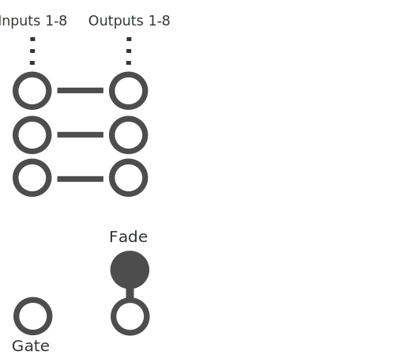

Github Nightly Builds.
Checks nightly updates on github for your plugins.
TODO
The modules context menu has a theme submenu where you can change the background to a solid white or black color if you are having trouble with the default background design.